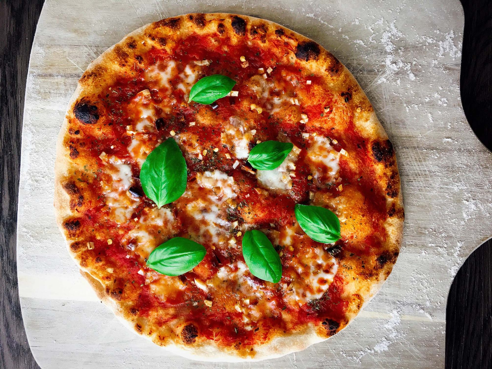

Marinara is a Neapolitan pizza with a topping of tomatoes, oregano, garlic, extra virgin olive oil, and sometimes fresh basil. Marinara is a part of protected Napoletana pizzas, with specific rules concerning the production process, the dough, and the key ingredients used in making the pizza.
Meal prep time : 1 hour 10 minutes
Servings : 1 (8 slices)